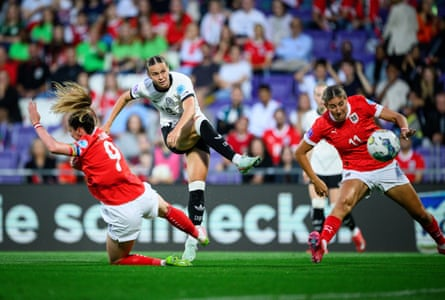
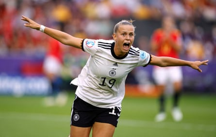
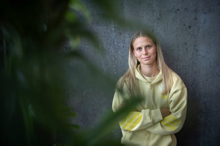

“M aybe I did the homework, but maybe I didn’t – the important thing was to get out on the pitch again.” Klara Bühl is describing her time at school when she would come home, eat, possibly do some schoolwork before heading out again.
“Football was everything for me. We played at school and then next to the school there was a small astro pitch. I played there until training began at five o’clock and so it was every afternoon.”
Bühl is one of Europe’s best, a left-winger who is as two-footed as she is electric. The Bayern Munich player is in form, without any injury concerns and looking forward to the Euros. “You can see the sparkle in everyone’s eyes. We are ready,” she says.
At 24, Bühl is reaching her peak years and believes her skills were honed during that formative period in Münstertal. “I learned everything I can there,” she says. “Shooting, with both my feet, dribbling because it was so small and also how to push through because I was always the youngest – and the only girl there.”
At the start of the year the Germany coach, Christian Wück, spoke to Kicker about Bühl’s capabilities with both feet, which makes her incredibly difficult to defend against. “I don’t know anyone who is as two-footed as she is,” he said. “For her it makes no difference if she takes a free-kick with her left or her right. There are only a few players, in men’s or women’s football, who are capable of doing that.”
Klara Bühl fires off a shot during the Nations League match against Austria.Photograph: Marvin Ibo Guengoer/Getty Images
So where did that come from? “My brother, who is a year and a half older than me, was left-footed and there aren’t that many left-footed players so I simply thought it was a bit cooler,” she says. “I was 10 or 12 so I thought about it and decided I would rather be left-footed. There were a few months when I went to training and just did everything with my left.”
Bühl stood out at an early age, soon swapping SpVgg Untermünstertal for Freiburg, where she made her Bundesliga debut at the age of 15. She rose through the German under-age teams before being called up to the senior squad in 2019. She was mainly used as a substitute at the World Cup in France that year as Germany went out in the quarter-finals , meaning that Euro 2022 was her first major tournament as a key player.
The showpiece in England, which had been delayed for a year because of the pandemic, had been going well for Bühl until, before the semi-final, disaster struck. She grimaces slightly as she describes what happened. “One evening I had a bit of a headache and then I could feel my throat as well so I went to bed early to sleep it off. Then in the middle of the night I woke up and thought ‘OK, this is not good’. The next morning I had a test and it was positive.”
Germany beat France in the last four and were looking forward to playing England at a full Wembley in the final. Bühl, however, was in isolation. “I spent a week on my own in a hotel room hoping that I’d test negative. Your only wish is that it is finally over. You see what the other girls are experiencing and you are there on your own.”
Klara Bühl celebrates scoring against Spain at Euro 2022.Photograph: John Sibley/Reuters
The negative test did not come soon enough for Bühl to play in the final, which England won 2-1 after Chloe Kelly’s extra-time goal. “I was just happy I could be in the stadium to take it all in. Even on the morning of the final I didn’t know whether I’d be able to be there so I just tried to use all the energy I had collected in that hotel room over a week and take it to the girls.”
Does she look back and think what could have been? “I knew it was important to work through what had happened and to do that quite quickly. I also learned you should always enjoy being on the pitch because you never know what is going to happen.
“The coronavirus was really something different but it could be an injury or something else. I learned to enjoy being able to play in a big tournament, so that was a lesson, and this time I hope to be able to play from start to finish.”
Germany are in a tough group in Switzerland, facing Sweden, Denmark and Poland. They arrive in a confident mood having won five of their six games in 2025, scoring an impressive 26 goals along the way. Their final two warm-up matches were 4-0 and 6-0 victories against the Netherlands and Austria.
“We are a bit more carefree and think less about how the goals are going to come and then they seem to come naturally,” says Bühl. “We are a bit more attack-minded now as well. Scoring a lot of goals gives you confidence that you will score.
“Does that make us one of the favourites? I don’t think it is in our mentality to say that, but we have a lot of quality in the team and we have also built a good atmosphere. But the fact is that everyone has to be 100% on top of their game in every game, otherwise it won’t work.”
Klara Bühl says Bayern Munich teammate and England midfielder Georgia Stanway is ‘a real playmaker’.Photograph: Tim Wegner/The Guardian
Bühl – who is also known for her crocheting , having made the team’s mascots, a koala and an otter, for the past two tournaments – will come up against several Bayern teammates at the Euros. In the group phase there will be games against Pernille Harder’s Denmark and the Swedish trio of Magda Eriksson, Linda Sembrant and Julia Zigiotti Olme. Then, there may be a quarter-final against England and Georgia Stanway.
“Georgia is super honest, very direct,” Bühl says. “That is really the English mentality that she has got, very funny On the pitch she is very good in the one-on-one duels and is a fighter. She is a real playmaker. She always wants the ball and she distributes it all the time. That includes the dangerous balls that can cut through two lines of a defence.”
Stanway is also a budding tattooist. She has inked a few teammates, including Zigiotti Olme, so would Bühl let Stanway loose on her? Bühl laughs. “I have thought about maybe having one done. I would like a smiley here [she points to her left wrist]. But there hasn’t been the right moment yet. But I would say I can picture it happening. She does it really well.”
On a more serious note, does she feel England have improved or gone backwards since beating Germany three years ago? “It will be hard to top the last Euros as that was at home and there was an incredible hype around the team that took the players along with it. If you know what it can be like, and it is not like that, it can be hard to get in the same flow.
“Because of that I would say that they are not quite as good as with the 2022 Euros.” She pauses, then says, with a smile: “Without wishing to tread on any toes of course.”